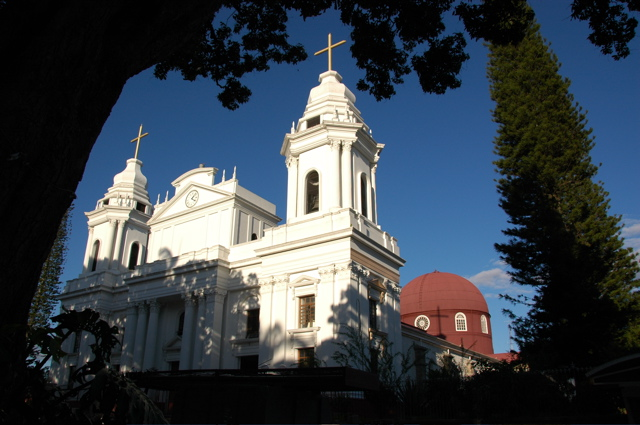
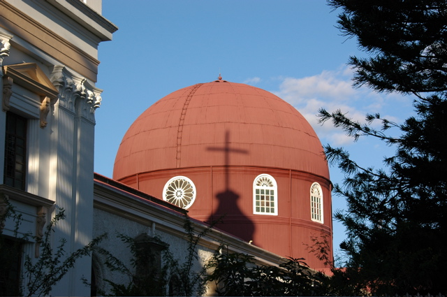
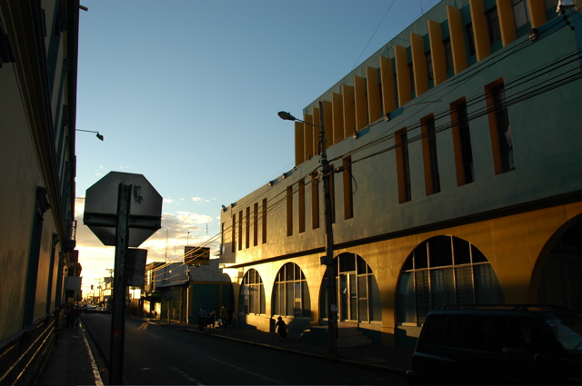

Für den Rückzug haben wir uns Alajuela als Basislager ausgesucht. Die Stadt ist die zweitgrößte des Landes, aber dennoch sehr beschaulich und nur 20 km nördlich von San Jose gelegen. Da der Flughafen von hier aus sogar näher ist, können wir morgen ein paar Minuten länger schlafen.
Die Sehenswürdigkeiten der Stadt haben wir heute Nachmittag in wenigen Metern abgehakt. Einen Block von unserem Hostel Mango Verde, das einen sehr hübschen Innenhof hat, liegt der obligatorische Parque Central. Hier kann man unter hohen Mangobäumen den Sonntag an sich vorbei treiben lassen.
An der Stirnseite des Platzes liegt die Kathedrale von Alajuela, deren Hauptmerkmal die Kuppel ist, die im Erdbeben von 1991 zerstört wurde. Die Renovierung wurde besonders mittelamerikanisch durchgeführt: Jetzt ziert eine rostrote Wellblechkuppel die Vierung.
Wir bleiben gespannt auf die hiesigen Silvester-Feierlichkeiten. Die Stadt wirkt wie leer gefegt; angeblich sind alle an den Strand gefahren. Daher haben auch die meisten Geschäfte geschlossen. Wir haben uns vorsorglich mit Spirituosen eingedeckt, um notfalls auch allein anstoßen zu können. In diesem Sinne: Prost Neujahr!
